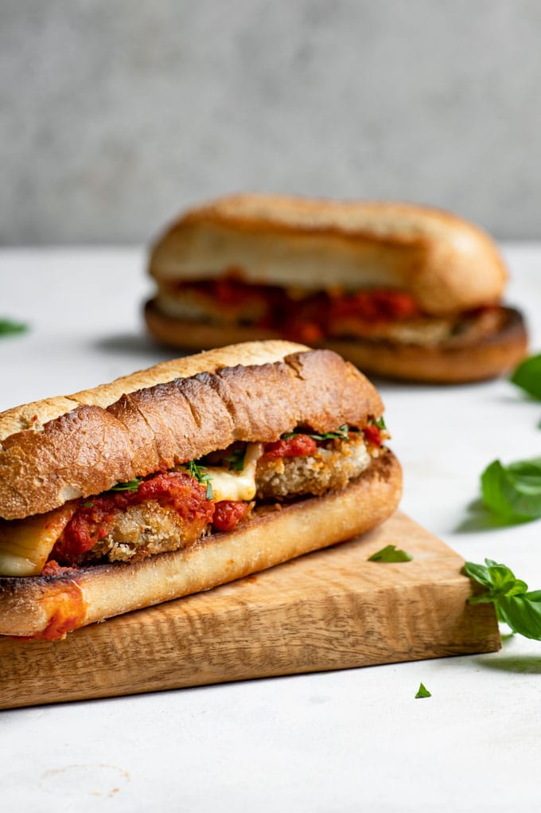

Chicken Parm Sub

Ingredients
- 3 chicken breasts cut in half lengthwise
- ½ cup flour
- 4 eggs whisked
- 1 ¼ cup Italian flavored breadcrumbs
- 1 teaspoon garlic powder
- 1 teaspoon onion powder
- 1 ½ teaspoons dried basil
- 1 teaspoon salt
- ½ teaspoon pepper
- ½ cup fresh parmesan cheese grated
- 2 cups oil
- 6 Italian style buns
- ¼ cup butter
- ½ teaspoon garlic salt
- 8 oz. mozzarella cheese sliced
- 1 ½ cups marinara sauce
- ⅓ cup fresh basil chopped
Recipe
- In a small bowl, mix bread crumbs,
garlic powder, onion powder, dried
basil, salt, pepper, and grated parmesan
cheese. Transfer to a shallow bowl.
Whisk eggs and transfer to a second shallow bowl.
Place flour in a third shallow bowl.
- Dredge chicken by dipping the cutlets in the
following order: flour, egg, breadcrumbs,
egg, breadcrumbs.
- Heat oil in pan on medium high heat.
When oil is hot, turn heat down to medium
and shallow fry the chicken for three to four
minutes on each side until golden brown and
no longer pink inside.
- Place the chicken on a rack over a cookie sheet
and top with sliced mozzerella cheese.
Broil the chicken for 3 minutes until the cheese is melted.
Watch carefully so they do not burn.
- Cut buns in half, spread with butter and
sprinkle with garlic salt.
Toast under the broiler for 3-5 minutes,
watching carefully.
- Heat marinara sauce in the microwave for 1 minute,
stirring after 30 seconds.
Spoon ¼ cup marinara sauce on each chicken cutlet
and sprinkle with chopped basil.
Place on buns and serve.
Homepage
Source
Easy Chicken Recipe